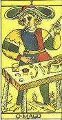
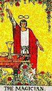
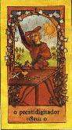
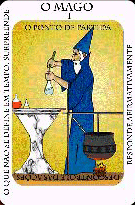

O primeiro passo para a interpretação
das cartas do Tarot refere-se ao simbolismo contido em cada uma delas.
Aqui analisaremos, de forma breve, os símbolos que podemos encontrar
nos 22 Arcanos Maiores. Lembre-se, no entanto, que o símbolo fala
ao inconsciente e que é de lá que deve vir a resposta às
suas perguntas e não de uma análise fria do significado do
símbolo.
- A
direção e a posição
Exemplos
Atente para as cartas abaixos. Procure guiar-se
por elas nas explicações a seguir. Perceba que o Arcano é
o mesmo (O Mago), mas que cada baralho apresenta a mesma figura de forma
diferente.




As
inscrições
Você deverá, antes de mais nada,
atentar para os principais símbolos expressos visualmente nas cartas
do Tarot. Fique atento para:
- Naipe de Paus, cajados, bastões: representam o poder
já instalado que permanece. Princípio ativo positivo.
- Naipe de Espadas, correntes cordas, punhais, espadas: representam
a força em todos os sentidos. Princípio ativo negativo.
- Naipe de Copas, taças, tigelas, copos: representam tudo
o que for perceptivo e deva ser guardado, preservado. Princípio
passivo emocional.
- Naipe de Ouros, moedas, dinheiros, rodas: representam a matéria
e tudo o que envolve negócios. Princípio ativo positivo.
- Pontos: número relativo da pergunta a ser respondida.
O FATO.
- Círculo: O universo espiritual. O ESPÍRITO.
- Quadrado: o universo físico. A MATÉRIA.
- Cruz: representa a missão. O KARMA.
- Triângulo para cima: a bondade, a verdade, o universo
que se equilibra. A ALEGRIA.
- Triângulo para baixo: a maldade, intrigas, traições,
mentiras, o universo que desconhece o seu “eu”. O NEGATIVO.
- Chifre: o universo que complementa o espírito. A ALMA.
- Branco: representa a sua espiritualidade e tudo o que a envolve.
- Azul: representa o seu lado criativo, sensível, interligado.
- Verde: representa a sua consciência e tudo o que a envolve,
desde os valores até as atitudes.
- Amarelo: representa a intelectualidade, a sua evolução
espiritual.
- Vermelho: representa a sua atividade no seu dia-a-dia, de acordo
com sua energia física e a sua espiritualidade.
- Preto: representa a sua imortalidade, no sentido da transformação
e da evolução matéria/espírito.
A direção
e a posição
Outro ponto importante na leitura do Tarot diz
respeito à direção e à posição
das figuras. Mas atenção: em diferentes baralhos de Tarot,
as mesmas figuras podem assumir diferentes direções e posições.
- Figura olhando à esquerda dela própria: interprete
como um passado relacionado à pergunta em questão.
- Figura olhando de frente para você: interprete como presente.
- Figura olhando à direita dela própria: interprete
como futuro.
- Figura sentada: a predição demorará algum
tempo para se concretizar.
- Figura em pé: a predição terá acontecimento
rápido.